1.1.3.1. Outline
Direct current voltage (P-N) of Servo Drive Unit that drives the motor exceeded the set value.
1.1.3.2. Causes and checking methods
|
<Case: Error always occurs even when the motor is off> (1) Please examine the components that are related to the overvoltage error detection. n Please replace CNSGC cable and examine it CNSGC. n Please replace BD530/BD531 board and examine it. n Replace the servo drive unit and then check it.
<Case: Error always occurs at the moment when the motor turns on> (2) Please examine the components that are related to the power. n Replace the servo drive unit and then check it. n Please examine the 3-phase voltage from the inside of controller. n Please examine the controller's 3-phase input voltage.
<Case: Error occurs at a certain step according to the Robot's operation speed> (3) Make changes on a speed of Robot's operation in order to confirm the error. n Please reduce the speed of Robot's operation in order to confirm the error. n Please examine the recovery discharge resistance value. |
(1) Please examine the components that are related to the overheat error detection.
AMP overvoltage error is detected by the servo drive unit when the DC power (P-N) to the servo drive unit exceeds the set level. Detected error will be sent through CNSGC cable to be handled by BD530/BD531 board.
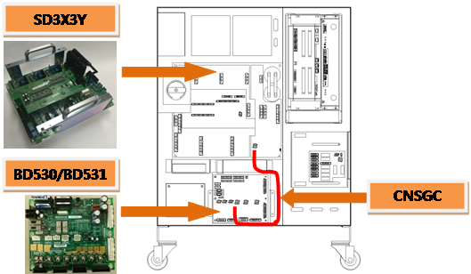
(a) Hi5a-S00 controller
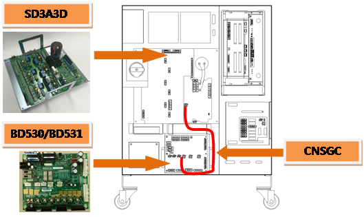
(b) Hi5a-S30 controller
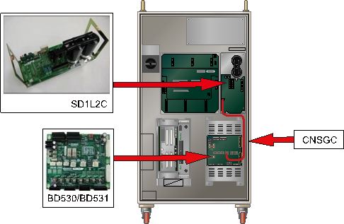
(c) Hi5a-N00 controller
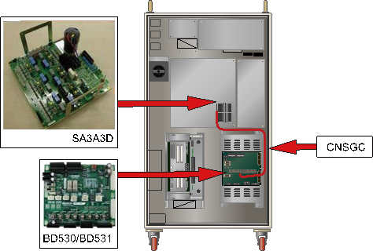
(d) Hi5a-N30 controller
Figure 1.10 Arranging the parts related to the overvoltage error
n Replacement and examining of CNSGC cable
Replace the CNSGC cable with new one and test it. If the error does not persist, cable connection problem caused this error. Please replace the CNSGC cable with new one.
n Replacement and examining of BD530/BD531
Replace the BD530/BD531 with new one and test it. If the error does not persist, the board malfunction caused this error. Please replace the BD530/BD531 with new one.
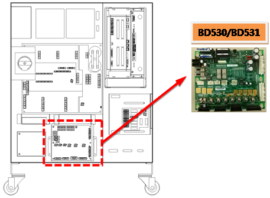
(a) Hi5a-S00 controller
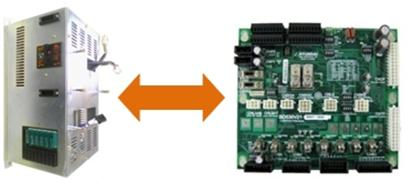
(b) Hi5a-N controller
Figure 1.11 Replacement of BD530/BD531
n Replacement and inspection of servo drive unit
The AMP overvoltage error detection module is as shown below.
Ø Hi5a-S controller : Medium size SD3X3Y, Small size SD3A3D
Ø Hi5a-N controller : Medium size SD1L2C, Small size SA3A3D
Please check the components in the controller that you are currently using and examine it. Please replace it with new one and see if the error persists.
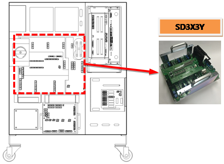
(a) Hi5a-S00 controller
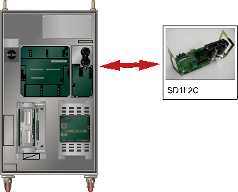
(b) Hi5a-N controller
Figure 1.12 Replacing the module when the overvoltage error occurs
(2) Please examine the components that are related to the power.
Overvoltage error occurs when direct current voltage that exceeds DC395V due to 3-phase input voltage over AC 220V enters to the Servo Drive Unit.
n Replacement and inspection of servo drive unit
Replace the AMP overvoltage error detection module and then check if the error occurs again.
An error may occur continuously due to module's internal circuit malfunction.
Ø Hi5a-S controller
l Medium size Robot's Servo Drive Unit: SD3X3Y
l Small size Robot's Servo Drive Unit: SD3A3D
Ø Hi5a-N controller
l Medium size Robot's diode module : SD1L2C
l Small size Robot's Servo Drive Unit: SA3A3D
n Examine the 3-phase voltage
AMP overvoltage error is activated from approximately DC 395V
If voltage over AC242 V enters to the Servo Drive Unit, a recovery discharge resistance overheat error may occur when the motor turns on. If the input voltage exceeds the allowed range, please examine according to a controller's input voltage examination procedures and a controller's 3-phase internal voltage examination procedures.
Ø Servo Drive Unit input voltage specification: 3-phase AC 220V
Ø Allowed range when motor turns on: 198V ~ 242V
(3) Please confirm the occurrence of error according to the speed of Robot's operation.
If a robot reduce the speed rapidly, or make a high speed movement toward to gravity direction, it can cause an overvoltage error. Please confirm if an error occurred according to a speed of Robot's operation. AMP overvoltage occurrence error also can be caused by an invalid recovery discharge resistance value or recovery discharge control malfunction. In case when a Robot's speed is reducing, or moving toward to gravity direction, voltage of the Servo Drive Unit increases, and the voltage will be discharged with a recovery discharge resistance in order to prevent damages on components that may caused by an increased voltage.
n Make changes on a speed of Robot's operation
If a recovery electric power that generated by Robot's operation exceeds the controller's designed specification, overvoltage error may occurs. Please reduce the speed of a step that the error occurs and re-operate in order to confirm if the error persists. If the error does not occur when the speed is reduced, please change the speed of step and use it.
n Examining the recovery discharge resistance value
If a recovery resistance value is greater than the specification, recovery discharge does not perform well and it will cause the overvoltage error. Recovery resistance specifications are subject to be changed according to the controller's specification. Please refer to a manual and a controller check sheet that provided upon a purchase.
If the resistance value exceeds 10 % of specification, please replace it.
Ø Hi5a-S controller
l Medium size (SD3X3Y) recovery discharge resistance value: 5 ohm(S00)
l Large size (SD3X3Y) recovery discharge resistance value: 4 ohm(S80)
l Small size (SD3A3D) recovery discharge resistance value: 15 ohm(S30)
Ø Hi5a-N controller
l Medium size (SD1L2C) recovery discharge resistance value: 5 ohm
l Small size (SA3A3D) recovery discharge resistance value: 15 ohm
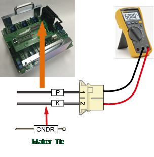
(a) Hi5a-S00 controller
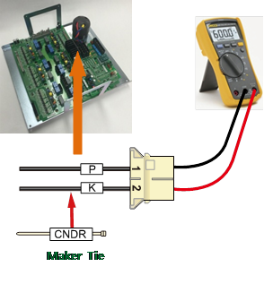
(b) Hi5a-S30 controller
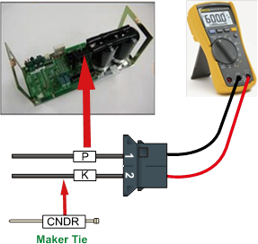
(c) Hi5a-N00 controller
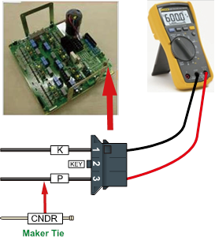
(d) Hi5a-N30 controller
Figure 1.13 Measuring the resistance value at CNDR